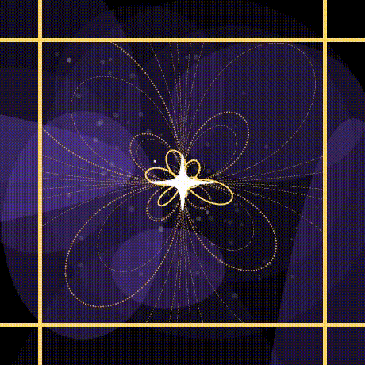
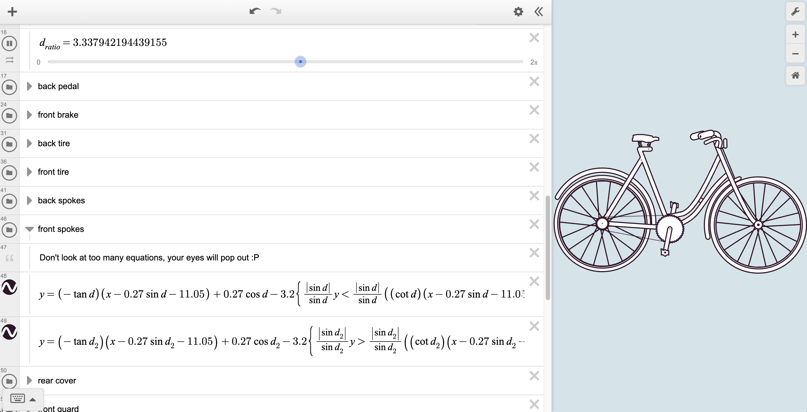
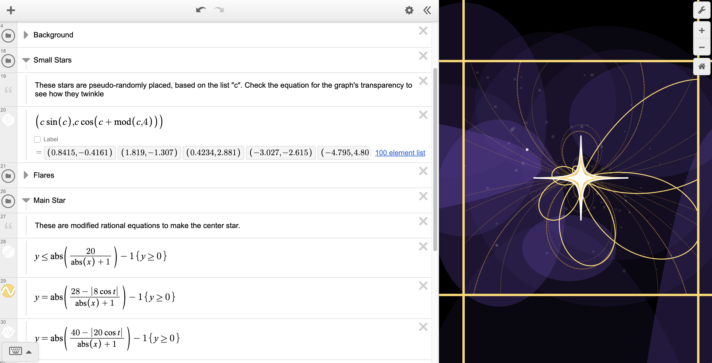

Pretty, right?
If you haven't been in an algebra class recently, you might not be familiar with
Desmos.com - An online graphing calculator that's free and easier to use than your old Ti-84. It's pretty popular with 75m+ annual users.
One of the best parts of Desmos is its greatly improved graphics compared to traditional calculators. The color options, line weights, and timed variables open the gates to artistic expression. Embracing this strength, Desmos hosts an annual "Global Math Art Contest". Participants submit their mathematical artpieces, then the best 100 are featured.
Graciously, my art won and was featured two years in a row.
2022 Winner: Repose
This piece was my first attempt at making art with math. It was based on the top-right bike in this old german encyclopedia, which I found on
rawpixel.

To create an image with so many curves and corners, I had to use lots of different equations. These include conics, parametrics, polygons, lines, rationals, and polynomials, all carved with domain restrictions.
Timed slider variables animate the rotation and seat-bouncing, and adjustable variables can tweak the art's line thickness to your liking. You might also notice the gear ratios are accurate :)

2023 Winner: Starbirth
Given my success last year, I tried my hand at making art again. Honestly, I was out of good ideas.
So, I looked at the things I've always loved, and staring up at the stars stood out.
This piece is a (fairly symbolic) represenation of a shining star in the galaxy, dressed in flowing solar flares (or magnetic fields maybe).

That's all.
Get in touch!


 Witte's Workbench
Witte's Workbench